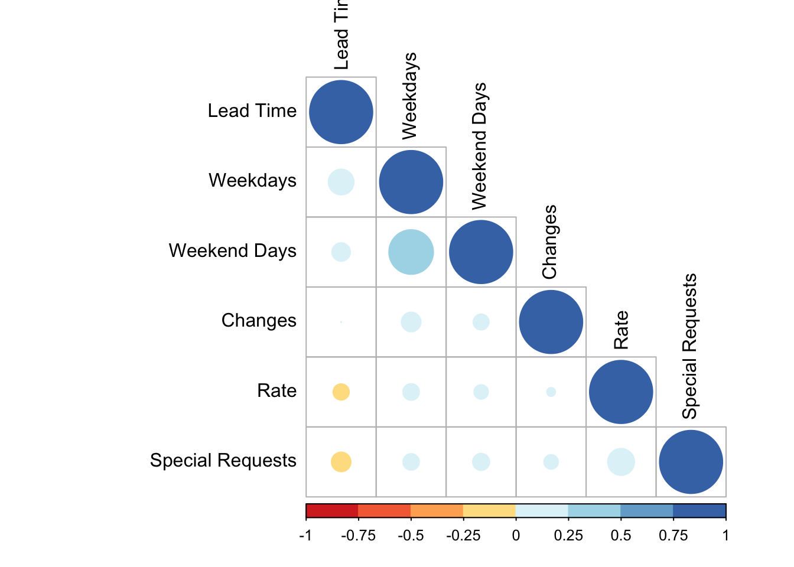

17 Common ggplot Problems

Here are a bunch of issues that I have run into and how to solve them.
17.1 Reorder Factor Levels in a Bar Graph
Factors should be deliberately ordered. Days of the week should be in order; other things might best be alphabetically. Other times you want to put them in order by frequency/amount.
The forcats package is your friend! There’s a great cheat sheet here.
17.1.1 Reorder by a different value
In this case, we want to order the bar graph in descending order by mean adr (which we are providing to ggplot). Here, we enclose the x variable in the reorder command and tell it how to reorder the factor (in this case, by descending adr).
### Use "reorder" to rearrange the factor levels on the x axis
# Create two plots with our booking data
topplot <- booking_data %>%
group_by(market_segment) %>%
summarize(adr = mean(adr)) %>%
ggplot(aes(x = market_segment, y = adr)) +
geom_bar(stat = "summary", fun = "identity") +
labs(x="Market Segment",
y = "Avg Daily Rate ($)")
bottomplot <- booking_data %>%
group_by(market_segment) %>%
summarize(adr = mean(adr)) %>%
ggplot(aes(x = reorder(market_segment, -adr), y = adr, fill = market_segment)) +
geom_bar(stat = "summary", fun = "identity") +
scale_fill_manual(values=c("Direct" = "#7a0019", rep("grey70", 7))) +
labs(x="Market Segment",
y = "Avg Daily Rate ($)") +
theme(legend.position = "none", # Hide legend
panel.background=element_blank(),
panel.grid.minor=element_blank(),
panel.grid.major.y=element_blank(),
panel.grid.major.x=element_line())
# Display the plots side by side with a shared title
grid.arrange(topplot, bottomplot, ncol=1,
top="Hotel Bookings - Avg Daily Rate by Segment")
17.1.2 Reorder by frequency
You often want to reorder by frequency (ie, showing the most common item first). The fct_infreqcommand does this in one step.
### Use "fct_infreq" to rearrange by frequency
# Create two plots with our booking data
topplot <- booking_data %>%
group_by(assigned_room_type) %>%
summarize(count = n()) %>%
ggplot(aes(x = assigned_room_type, y = count)) +
geom_bar(stat = "summary", fun = "identity") +
labs(x="Room Type",
y = "Number of Bookings")
bottomplot <- booking_data %>%
# Reorder the factor
mutate(assigned_room_type = fct_infreq(assigned_room_type)) %>%
# Plot the new data
ggplot(aes(x = assigned_room_type)) +
geom_bar() +
labs(x="Room Type",
y = "Number of Bookings") +
theme_minimal()
# Display the plots side by side with a shared title
grid.arrange(topplot, bottomplot, ncol=1,
top="Hotel Bookings - Bookings by Room Type")
17.1.3 Only show n levels + “Other”
Often, only the top few levels are important. Let’s look at the number of bookings from Portugal and Spain (the neighboring country). Any other country should be tallied as “Other Countries”. The fct_other function works lets us specify which levels to keep (anything else goes in the “other” category. The fct_lump function works similarly but it lets us specify just a number of factors to keep.
### Bookings by country (Portugal, Spain, And "Other Countries")
booking_data %>%
# Reorder the factor
mutate(country = fct_other(country,
keep = c("PRT", "ESP"),
other_level = "Other Countries")) %>%
# Plot the new data
ggplot(aes(x = country)) +
geom_bar(fill = "#7a0019") +
labs(x="Room Type",
y = "Number of Bookings") +
coord_flip() +
theme_minimal()
17.1.4 Manually relevel
Sometimes we just need to specify things manually (or it’s the fastest way to do something! Let’s rearrange the graph we created above to show Portugal up top, Spain in the middle and “Other Countries” last.
### Bookings by country (Portugal, Spain, And "Other Countries")
booking_data %>%
# Reorder the factor
mutate(country = fct_other(country,
keep = c("PRT", "ESP"),
other_level = "Other Countries") %>%
# Force the new levels into this arrangement
fct_relevel(c("Other Countries", "ESP", "PRT"))) %>%
# Plot the new data
ggplot(aes(x = country)) +
geom_bar(fill = "#7a0019") +
labs(x="Room Type",
y = "Number of Bookings") +
coord_flip() +
theme_minimal()
17.2 Fix Dates
17.2.1 Extract Days of the Week from a Date
We often have data as a date. Or we want it as a date. Remember how we created a proper date from the unusual variables (separate day, month, year) in the hotel bookings data?
### Make a consolidated arrival_date field
# First, "paste" together the day, month, and year into a single string
# Then, use the dmy() or "daymonthyear" function from lubridate to turn it into a date
# There are similar ymd and mdy functions.
booking_data <- booking_data %>%
mutate(arrival_date = paste0(arrival_date_day_of_month,
arrival_date_month,
arrival_date_year) %>% dmy())Suppose we want to ask which day has the most check-ins? We need to know whether a given date was a Monday, Tuesday, etc. The wday function from the lubridate package can do this for us.
### Extract weekday from the date field with the wday function
booking_data <- booking_data %>%
mutate(checkin_dayofweek = wday(arrival_date,
label = TRUE, # If FALSE, gives number instead of name
abbr = TRUE)) # If FALSE, spells out whole day name
# Look at a few random records
booking_data %>%
sample_n(10) %>%
select(hotel, country, arrival_date, checkin_dayofweek)## # A tibble: 10 x 4
## hotel country arrival_date checkin_dayofweek
## <chr> <chr> <date> <ord>
## 1 Resort Hotel GBR 2017-06-04 Sun
## 2 Resort Hotel PRT 2016-08-02 Tue
## 3 Resort Hotel PRT 2015-10-30 Fri
## 4 City Hotel GBR 2017-05-26 Fri
## 5 City Hotel DEU 2017-08-25 Fri
## 6 City Hotel PRT 2015-09-04 Fri
## 7 Resort Hotel BGR 2017-04-21 Fri
## 8 City Hotel FRA 2017-03-01 Wed
## 9 City Hotel PRT 2016-04-13 Wed
## 10 Resort Hotel IRL 2016-07-17 Sun# Make barchart with looking at most popular check-in day
booking_data %>%
ggplot(aes(x = checkin_dayofweek)) +
geom_bar(fill = "#00759a") +
labs(x="Check-In \nDay",
y = "Number of Bookings",
title = "Number of Bookings by Check-In Day") +
coord_flip() +
theme_minimal() +
theme(axis.title.y = element_text(angle = 0, vjust = 0.5))
But…it starts at the bottom (with Sunday). I want Sunday on the top. Let’s reverse the factor ordering (inside the ggplot command) with fct_rev and we should be all set.
# Make barchart with looking at most popular check-in day
# Reverse the factor to have a nice order with Sunday up top.
booking_data %>%
ggplot(aes(x = fct_rev(checkin_dayofweek))) +
geom_bar(fill = "#00759a") +
labs(x="Check-In \nDay",
y = "Number of Bookings",
title = "Number of Bookings by Check-In Day") +
coord_flip() +
theme_minimal() +
theme(axis.title.y = element_text(angle = 0, vjust = 0.5))
That’s it!
17.3 Scaling Axes
17.3.1 Rescaling and Rounding Currency
When you have large numbers, readers may end up having to count the zeros to see the size of the numbers. Instead of focusing on the data, they’re trying to understand the scale of it…that’s no good. You have a couple choices:
Add dividers (usually a comma in the US, often a period in the rest of the world), e.g. 13,456 instead of 13456
Round and use K, M, etc. This is common for financial statements, e.g. $42K instead of 42356.48
The scales package has many useful functions to help with this.
### Revenue by hotel
left_graph <- booking_data %>%
filter(is_canceled == 0) %>%
mutate(total_length_of_stay = stays_in_weekend_nights + stays_in_week_nights,
revenue = adr * total_length_of_stay) %>%
group_by(hotel) %>%
summarize(revenue = sum(revenue)) %>%
ggplot(aes(x = hotel, y = revenue)) +
geom_bar(stat = "identity",
fill = "#00759a") +
labs(x = "",
y = "Revenue ($)",
title = "Without Scaling on Y Axis") +
theme_minimal()
right_graph <- booking_data %>%
filter(is_canceled == 0) %>%
mutate(total_length_of_stay = stays_in_weekend_nights + stays_in_week_nights,
revenue = adr * total_length_of_stay) %>%
group_by(hotel) %>%
summarize(revenue = sum(revenue)) %>%
ggplot(aes(x = hotel, y = revenue)) +
geom_bar(stat = "identity",
fill = "#00759a") +
labs(x = "",
y = "Revenue ($)",
title = "With Scaling on Y Axis") +
scale_y_continuous(labels=scales::dollar_format(scale = 0.000001, suffix = "MM")) +
theme_minimal()
grid.arrange(left_graph, right_graph, ncol=2,
top="Total Revenue by Hotel")
17.3.2 Percent Format
Similar to the example above, with parts to whole we sometimes want to display percentages. Let’s plot the percentage of bookings cancelled by month. The scales package includes the helpful label_percent function.
### Line graph with percentage of bookings cancelled per month
booking_data %>%
group_by(arrival_date_year, arrival_date_month) %>%
summarise(total_bookings = n(),
cancellations = sum(is_canceled),
pct_cancelled = cancellations/total_bookings) %>%
mutate(arrival_date = dmy(paste0("01", arrival_date_month, arrival_date_year))) %>%
ggplot(aes(x = arrival_date, y = pct_cancelled)) +
geom_line(color = "#00759a") +
labs(x = "Scheduled Arrival Date (by Month)",
y = "Percent of Cancelled",
title = "Percent of Bookings Cancelled by Month") +
# Use label_percent to change to a percentage format
scale_y_continuous(labels = label_percent(accuracy = 1L)) +
theme_minimal() +
theme(plot.title = element_text(hjust = 0.5))